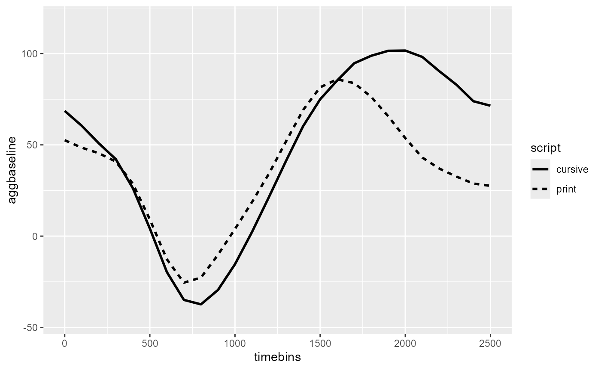
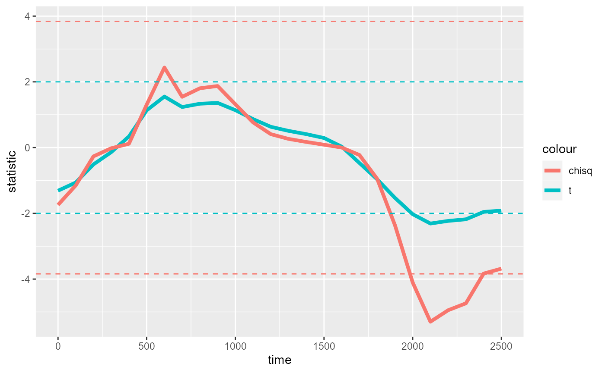
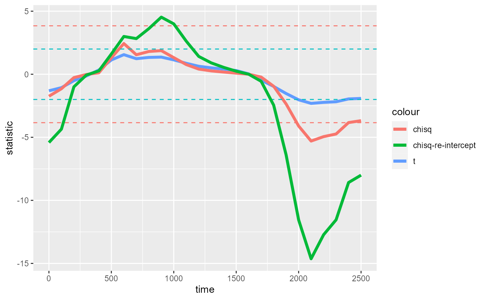
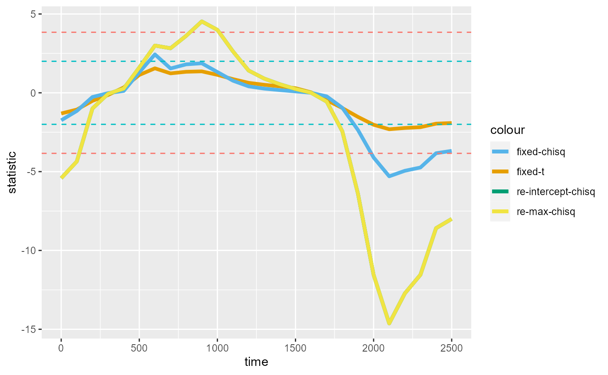
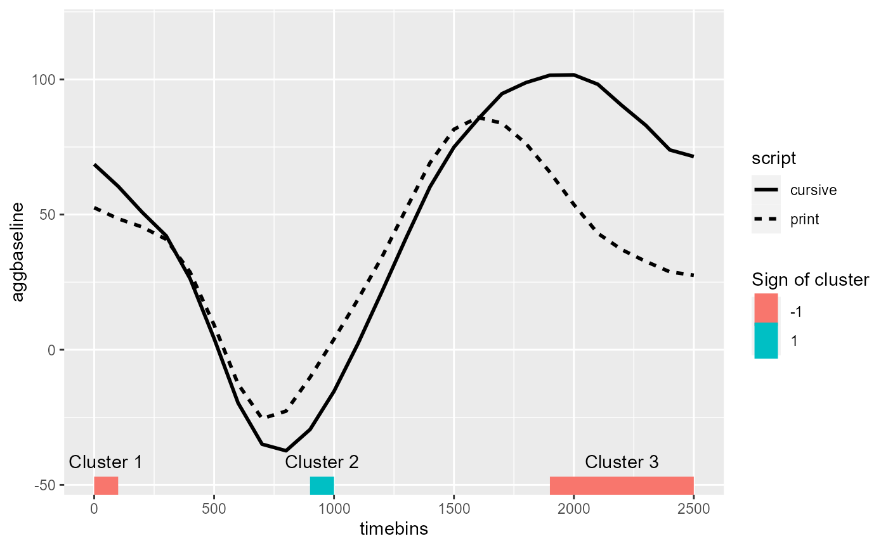
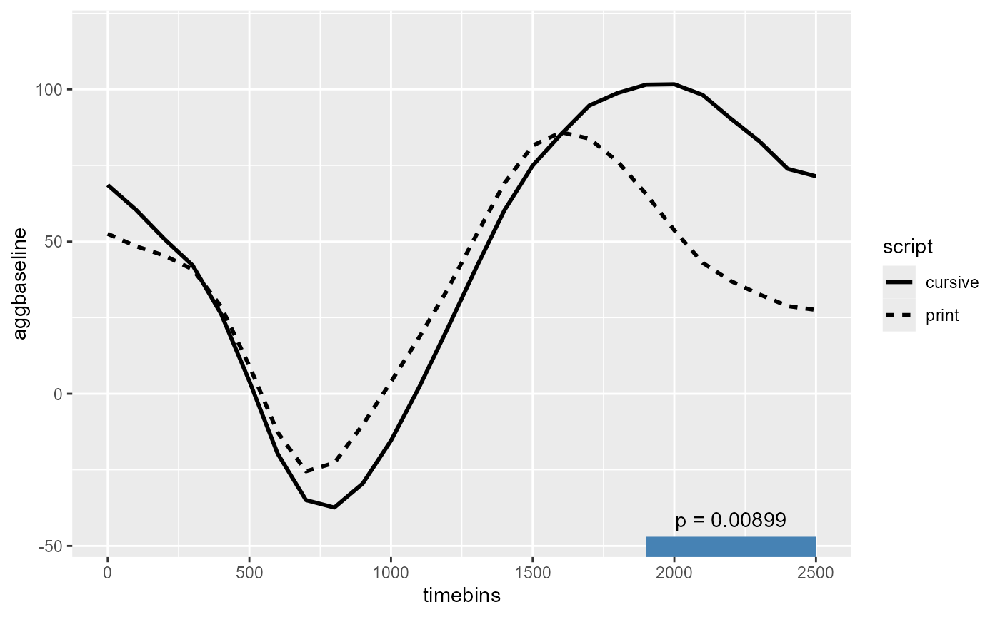

This tutorial is a walk through of the choice of t vs. chisq statistic in a (mixed-effects) CPA.
See more tutorials and vignettes on the Articles page.
Background
The data comes from a lexical decision task using pupilometry (specifically, measure of pupil dilation) to study differences in processing difficulty between print vs. cursive script. The data is available as part of the gazer package by Geller, Winn, Mahr, & Mirman 2020.
We will follow Jason Geller’s tutorial which used the clusterperm package to conduct a cluster-based permutation analysis (CPA) of differences in pupil size between the print and cursive conditions.
The data from the package (cursive_agg_data) looks
slightly different from that used in the tutorial, so to ensure full
reproducibility we use the exact
data that the tutorial used:
library(dplyr)
cursive_agg_data <- as_tibble(read.csv("https://raw.githubusercontent.com/jgeller112/drjasongeller/main/content/blog/2020-07-10-CBPT/blog_data.csv"))
cursive_agg_data
#> # A tibble: 2,184 × 5
#> X subject script timebins aggbaseline
#> <int> <chr> <chr> <int> <dbl>
#> 1 1 10b.edf cursive 0 36.9
#> 2 2 10b.edf cursive 100 27.5
#> 3 3 10b.edf cursive 200 19.6
#> 4 4 10b.edf cursive 300 12.6
#> 5 5 10b.edf cursive 400 5.60
#> 6 6 10b.edf cursive 500 0.968
#> 7 7 10b.edf cursive 600 -5.98
#> 8 8 10b.edf cursive 700 -5.96
#> 9 9 10b.edf cursive 800 3.01
#> 10 10 10b.edf cursive 900 12.9
#> # ℹ 2,174 more rowsThe data comes prepared for this analysis out of the box. The following columns are relevant for our analysis:
-
subject: Unique identifier for subjects -
script: A within-participant factor variable ("cursive","print") -
time: A continuous measure of time from 0-2500ms at 100ms intervals -
aggbaseline: The response variable representing normalized (“baseline-corrected”) pupil size
As the name of the cusrive_agg_data variable suggests,
the data has been aggregated within subject, collapsing across
trials.
The following reproduces the figure from the tutorial:
library(ggplot2)
script_fig <- ggplot(cursive_agg_data, aes(timebins, aggbaseline)) +
stat_summary(aes(linetype = script), geom = "line", linewidth = 1)
script_fig
For within-participant predictors like script, the
permutation algorithm will randomly swap the labels for condition
between the trials within each subject. This preserves
the temporal structure of the trial-level data (no swapping below the
trial-level grouping) as well as the subject-level grouping structure
(no swapping of trials across participants).
Outline
This case study vignette showcases five features of doing a CPA with
jlmerclusterperm:
Prepping data for CPA using
make_jlmer_spec()clusterpermute()with defaultstatistic = "t"A comparison between “t” and “chisq”
Specifying random effects
Contrast coding
Load the package and start the Julia instance with
jlmerclusterperm_setup() before proceeding.
library(jlmerclusterperm)
jlmerclusterperm_setup(verbose = FALSE)A) Prepping a specification object
We start with a simple specification object to model
aggbaseline using script as a predictor for
the script_fig data:
simple_spec <- make_jlmer_spec(
formula = aggbaseline ~ 1 + script,
data = cursive_agg_data
)
simple_spec
#> ── jlmer specification ───────────────────────────────────────── <jlmer_spec> ──
#> Formula: aggbaseline ~ 1 + scriptprint
#> Predictors:
#> script: scriptprint
#> Data:
#> # A tibble: 2,184 × 2
#> aggbaseline scriptprint
#> <dbl> <dbl>
#> 1 36.9 0
#> 2 27.5 0
#> 3 19.6 0
#> # ℹ 2,181 more rows
#> ────────────────────────────────────────────────────────────────────────────────For a sanity check, we fit a global model to the data…
jlmer(simple_spec)
#> <Julia object of type StatsModels.TableRegressionModel>
#> ────────────────────────────────────────────────────────────────────────
#> Coef. Std. Error z Pr(>|z|) Lower 95% Upper 95%
#> ────────────────────────────────────────────────────────────────────────
#> (Intercept) 46.7221 2.79622 16.71 <1e-61 41.2417 52.2026
#> scriptprint -10.2582 3.95445 -2.59 0.0095 -18.0088 -2.5076
#> ────────────────────────────────────────────────────────────────────────…and check that it’s comparable to what we expect from
lm():
summary(lm(formula = aggbaseline ~ 1 + script, data = cursive_agg_data))$coefficients
#> Estimate Std. Error t value Pr(>|t|)
#> (Intercept) 46.72214 2.796221 16.709029 4.512338e-59
#> scriptprint -10.25818 3.954454 -2.594083 9.547816e-03The full specification object for a CPA must also declare
the grouping structures present in the data. The rule
of thumb is that every observation (row) in the data must be
uniquely identified by a combination of columns for
subject, trial, and
time. Because CPA is over a time series data
time must always be specified, and subject
must also always be specified for the permutation algorithm to respect
subject-level grouping of the data.
The cursive_agg_data data collapses across trials within
subject, so there is no column for trial. However, we cannot leave the
trial argument unspecified because observations are not
uniquely identified by subject and time alone.
There are instead 2 rows per subject-time combination, one for each
script condition:
cursive_agg_data %>%
count(subject, timebins)
#> # A tibble: 1,092 × 3
#> subject timebins n
#> <chr> <int> <int>
#> 1 10b.edf 0 2
#> 2 10b.edf 100 2
#> 3 10b.edf 200 2
#> 4 10b.edf 300 2
#> 5 10b.edf 400 2
#> 6 10b.edf 500 2
#> 7 10b.edf 600 2
#> 8 10b.edf 700 2
#> 9 10b.edf 800 2
#> 10 10b.edf 900 2
#> # ℹ 1,082 more rowsTherefore we need a “dummy” column for trial to distinctly mark
“cursive” vs. “script” trials. We save this new data as
cursive_agg:
cursive_agg <- cursive_agg_data %>%
mutate(trial_type = paste0(script, "_agg"))
cursive_agg
#> # A tibble: 2,184 × 6
#> X subject script timebins aggbaseline trial_type
#> <int> <chr> <chr> <int> <dbl> <chr>
#> 1 1 10b.edf cursive 0 36.9 cursive_agg
#> 2 2 10b.edf cursive 100 27.5 cursive_agg
#> 3 3 10b.edf cursive 200 19.6 cursive_agg
#> 4 4 10b.edf cursive 300 12.6 cursive_agg
#> 5 5 10b.edf cursive 400 5.60 cursive_agg
#> 6 6 10b.edf cursive 500 0.968 cursive_agg
#> 7 7 10b.edf cursive 600 -5.98 cursive_agg
#> 8 8 10b.edf cursive 700 -5.96 cursive_agg
#> 9 9 10b.edf cursive 800 3.01 cursive_agg
#> 10 10 10b.edf cursive 900 12.9 cursive_agg
#> # ℹ 2,174 more rowsThis makes all observations uniquely identified by the columns for
subject, trial, and time:
cursive_agg %>%
count(subject, timebins, trial_type) %>%
distinct(n)
#> # A tibble: 1 × 1
#> n
#> <int>
#> 1 1The final specification object looks like the following:
cursive_agg_spec <- make_jlmer_spec(
formula = aggbaseline ~ 1 + script,
data = cursive_agg,
subject = "subject", trial = "trial_type", time = "timebins"
)
cursive_agg_spec
#> ── jlmer specification ───────────────────────────────────────── <jlmer_spec> ──
#> Formula: aggbaseline ~ 1 + scriptprint
#> Predictors:
#> script: scriptprint
#> Groupings:
#> Subject: subject
#> Trial: trial_type
#> Time: timebins
#> Data:
#> # A tibble: 2,184 × 5
#> aggbaseline scriptprint subject trial_type timebins
#> <dbl> <dbl> <chr> <chr> <int>
#> 1 36.9 0 10b.edf cursive_agg 0
#> 2 27.5 0 10b.edf cursive_agg 100
#> 3 19.6 0 10b.edf cursive_agg 200
#> # ℹ 2,181 more rows
#> ────────────────────────────────────────────────────────────────────────────────B) CPA with default statistic = "t"
The CPA output from the original tutorial (using 100 simulations) is copied below for comparison:
#> #> effect b0 b1 sign cms p
#> #> script 0 100 1 10.121215 0.1584158
#> #> script 900 1000 -1 8.756152 0.1782178
#> #> script 1900 2500 1 82.198279 0.0099010Using a threshold of 2 with the default statistic = "t",
clusterpermute() returns the following:
set_rng_state(123L)
clusterpermute(
cursive_agg_spec,
statistic = "t", # Default value spelled out
threshold = 2,
nsim = 100,
progress = FALSE
)
#> $null_cluster_dists
#> ── Null cluster-mass distribution (t > 2) ────────────── <null_cluster_dists> ──
#> scriptprint (n = 100)
#> Mean (SD): 0.000 (0.00)
#> Coverage intervals: 95% [0.000, 0.000]
#> ────────────────────────────────────────────────────────────────────────────────
#>
#> $empirical_clusters
#> ── Empirical clusters (t > 2) ────────────────────────── <empirical_clusters> ──
#> scriptprint
#> [2000, 2300]: -8.748 (p=0.0099)
#> ────────────────────────────────────────────────────────────────────────────────The results look very different from the original. This is due to the following:
The cluster-mass statistic (cms) is lower. This is because we ran
clusterpermute()with the defaultstatistic = "t".Different clusters are identified. This is because our simple model does not account for subject-level variation, whereas the original did this with the error term in the formula
aggbaseline ~ script + Error(subject).The sign on the cluster is reversed. This is because the defaults of
aov()used in the original tutorial are different from the default contrast coding of our regression model.
We now address these issue in turn, building up to a CPA that closely replicate the results of the tutorial.
C) Comparing “t” vs. “chisq”
The original tutorial used clusterperm::cluster_nhds()
to conduct a CPA, which fits ANOVA models by time. There, the timewise
statistic used is chi-squared and the threshold is
determined from the p-value of the chi-squared statistic.
Using chi-squared statistics with p-value threshold is also supported
in clusterpermute() using statistic = "chisq"
(instead of the default "t"):
set_rng_state(123L)
clusterpermute(
cursive_agg_spec,
statistic = "chisq",
threshold = 0.05, # Threshold is now the p-value of the chi-squared statistic
nsim = 100,
progress = FALSE
)
#> $null_cluster_dists
#> ── Null cluster-mass distribution (chisq p < 0.05) ───── <null_cluster_dists> ──
#> script (n = 100, df = 1)
#> Mean (SD): 0.000 (0.00)
#> Coverage intervals: 95% [0.000, 0.000]
#> ────────────────────────────────────────────────────────────────────────────────
#>
#> $empirical_clusters
#> ── Empirical clusters (chisq p < 0.05) ───────────────── <empirical_clusters> ──
#> script (df = 1)
#> [2000, 2300]: -19.085 (p=0.0099)
#> ────────────────────────────────────────────────────────────────────────────────This returns the same cluster but now with a numerically larger cluster-mass statistic, as expected (chi-squared is asymptotic to t^2).
Below, we compare the shape of the timewise statistics between “t” with threshold of 2 and “chisq” with threshold of p=0.05:
timewise_ts <- compute_timewise_statistics(cursive_agg_spec, statistic = "t")
timewise_chisqs <- compute_timewise_statistics(cursive_agg_spec, statistic = "chisq")
library(ggplot2)
timewise_fig <- ggplot(mapping = aes(x = time, y = statistic)) +
geom_line(
aes(color = "fixed-t"),
linewidth = 1.5,
data = tidy(timewise_ts)
) +
geom_line(
aes(color = "fixed-chisq"),
linewidth = 1.5,
data = tidy(timewise_chisqs)
) +
geom_hline(
aes(yintercept = c(-2, 2, qchisq(.95, df = 1), -qchisq(.95, df = 1))),
color = rep(c("#00BFC4", "#F8766D"), each = 2), linetype = 2
) +
scale_color_manual(
values = setNames(
c("#E69F00", "#56B4E9", "#009E73", "#F0E442"),
c("fixed-t", "fixed-chisq", "re-intercept-chisq", "re-max-chisq")
)
)
timewise_fig
We find the same clusters identified between 2000ms-2300ms for both “t” and “chisq”, with the peaks more pronounced for “chisq”. The differences between the two are inconsequential for this example, but may produce different results in other cases.
The chi-squared statistic (which jlmerclusterperm
computes via a likelihood ratio test) is often preferred for testing
single parameters because it makes less assumptions and tend to be more
robust (glmmFAQ).
But because goodness-of-fit tests are at the level of a predictor in a
model formula, “chisq” is less interpretable for multi-level predictors
(k-1 > 1). For teasing apart the contribution of the individual
levels of a multi-level predictor, using statistic = "t" is
more appropriate.
D) Specifying random effects
The biggest missing component at this point is the subject random
effects, which the original tutorial captures via the error term
Error(subject). There isn’t a strict equivalent to this in
regression, but specifying random intercepts by subject with
(1 | subject) gets us very close:
cursive_agg_spec_re <- make_jlmer_spec(
formula = aggbaseline ~ 1 + script + (1 | subject),
data = cursive_agg,
subject = "subject", time = "timebins", trial = "trial_type"
)
set_rng_state(123L)
system.time({
re_CPA <- clusterpermute(
cursive_agg_spec_re,
statistic = "chisq",
threshold = 0.05,
nsim = 100,
progress = FALSE
)
})
#> user system elapsed
#> 0.00 0.08 8.12
re_CPA
#> $null_cluster_dists
#> ── Null cluster-mass distribution (chisq p < 0.05) ───── <null_cluster_dists> ──
#> script (n = 100, df = 1)
#> Mean (SD): 1.132 (12.58)
#> Coverage intervals: 95% [-21.081, 32.649]
#> ────────────────────────────────────────────────────────────────────────────────
#>
#> $empirical_clusters
#> ── Empirical clusters (chisq p < 0.05) ───────────────── <empirical_clusters> ──
#> script (df = 1)
#> [0, 100]: -9.770 (p=0.1881)
#> [900, 1000]: 8.521 (p=0.2475)
#> [1900, 2500]: -73.440 (p=0.0099)
#> ────────────────────────────────────────────────────────────────────────────────We repeat the results from the original tutorial below for comparison:
#> #> effect b0 b1 sign cms p
#> #> script 0 100 1 10.121215 0.1584158
#> #> script 900 1000 -1 8.756152 0.1782178
#> #> script 1900 2500 1 82.198279 0.0099010We now plot the timewise statistics from the random intercept models:
timewise_chisqs_re <- compute_timewise_statistics(cursive_agg_spec_re, statistic = "chisq")
timewise_fig_re <- timewise_fig +
geom_line(
aes(color = "re-intercept-chisq"),
linewidth = 1.5,
data = tidy(timewise_chisqs_re)
)
timewise_fig_re
At this point we may wonder whether the results change much if we
used a maximal model with the random effects structure
(1 + script | subject). We first create another
specification object with a maximal formula:
cursive_agg_spec_re_max <- make_jlmer_spec(
formula = aggbaseline ~ 1 + script + (1 + script | subject),
data = cursive_agg,
subject = "subject", time = "timebins", trial = "trial_type"
)Then compute the timewise statistics:
timewise_chisqs_re_max <- compute_timewise_statistics(cursive_agg_spec_re_max, statistic = "chisq")
#> ℹ 1 singular fit (3.85%).We find that the chisq statistics from the maximal model is virtually identical to that from the more parsimonious, intercept-only model (the two lines overlap):
timewise_fig_re +
geom_line(
aes(color = "re-max-chisq"),
linewidth = 1.5,
data = tidy(timewise_chisqs_re_max)
)
Parsimony is incredibly important for simulation - while
jlmerclusterperm is fast, model complexity is still a major
bottleneck. When adding the extra random effect terms (random slope and
correlation) has negligible effects on the statistic, removing them is
likely to be inconsequential for the CPA itself.
We show this in the following CPA run, which uses the maximal model.
Notice how the results are identical to the intercept-only
re_CPA but substantially slower:
set_rng_state(123L)
system.time({
re_max_CPA <- clusterpermute(
cursive_agg_spec_re_max,
statistic = "chisq",
threshold = 0.05,
nsim = 100,
progress = FALSE
)
})
#> user system elapsed
#> 0.01 0.05 12.11
re_max_CPA
#> $null_cluster_dists
#> ── Null cluster-mass distribution (chisq p < 0.05) ───── <null_cluster_dists> ──
#> script (n = 100, df = 1)
#> Mean (SD): 1.132 (12.58)
#> Coverage intervals: 95% [-21.081, 32.649]
#> ────────────────────────────────────────────────────────────────────────────────
#>
#> $empirical_clusters
#> ── Empirical clusters (chisq p < 0.05) ───────────────── <empirical_clusters> ──
#> script (df = 1)
#> [0, 100]: -9.770 (p=0.1881)
#> [900, 1000]: 8.521 (p=0.2475)
#> [1900, 2500]: -73.440 (p=0.0099)
#> ────────────────────────────────────────────────────────────────────────────────We run the above maximal mixed model CPA purely for demonstration purposes. The random effects structure is actually unidentifiable given the aggregated data, where at any point in time there are only 2 observations from each subject (the mean of each condition).
Lastly, back in our figure of the data, we annotate the clusters detected with the chisq p-value threshold of 0.05 from the random intercept CPA:
empirical_clusters_df <- tidy(extract_empirical_clusters(timewise_chisqs_re, threshold = 0.05))
script_fig +
geom_segment(
aes(
x = start, xend = end, y = -Inf, yend = -Inf,
color = factor(sign(sum_statistic))
),
linewidth = 10,
inherit.aes = FALSE,
data = empirical_clusters_df
) +
geom_text(
aes(
y = -Inf, x = start + (end - start) / 2,
label = paste("Cluster", id)
),
vjust = -2,
inherit.aes = FALSE,
data = empirical_clusters_df
) +
labs(color = "Sign of cluster")
E) Contrast coding
The last piece of the puzzle is the flipped sign of the effect. Whereas we detect a negative cluster when the line for cursive is over the line for print, the original tutorial reports a positive cluster (output repeated below):
#> #> effect b0 b1 sign cms p
#> #> script 0 100 1 10.121215 0.1584158
#> #> script 900 1000 -1 8.756152 0.1782178
#> #> script 1900 2500 1 82.198279 0.0099010Fixing this is trivial - it just takes a different choice of contrast.
For example, we can flip the levels of the factor to make “print” the reference level:
rev_contrast_df <- cursive_agg
rev_contrast_df$script <- factor(rev_contrast_df$script, levels = c("print", "cursive"))
contrasts(rev_contrast_df$script)
#> cursive
#> print 0
#> cursive 1
reverse_contrast_spec <- make_jlmer_spec(
formula = aggbaseline ~ 1 + script + (1 | subject),
data = rev_contrast_df,
subject = "subject", time = "timebins", trial = "trial_type"
)
set_rng_state(123L)
clusterpermute(
reverse_contrast_spec,
statistic = "chisq",
threshold = 0.05,
nsim = 100,
progress = FALSE
)
#> $null_cluster_dists
#> ── Null cluster-mass distribution (chisq p < 0.05) ───── <null_cluster_dists> ──
#> script (n = 100, df = 1)
#> Mean (SD): -1.132 (12.58)
#> Coverage intervals: 95% [-32.649, 21.081]
#> ────────────────────────────────────────────────────────────────────────────────
#>
#> $empirical_clusters
#> ── Empirical clusters (chisq p < 0.05) ───────────────── <empirical_clusters> ──
#> script (df = 1)
#> [0, 100]: 9.770 (p=0.1881)
#> [900, 1000]: -8.521 (p=0.2475)
#> [1900, 2500]: 73.440 (p=0.0099)
#> ────────────────────────────────────────────────────────────────────────────────Or we could also sum-code and set “print” to -1 and “cursive” to 1:
sum_contrast_df <- cursive_agg
sum_contrast_df$script <- factor(sum_contrast_df$script)
contrasts(sum_contrast_df$script) <- contr.sum(2)
contrasts(sum_contrast_df$script)
#> [,1]
#> cursive 1
#> print -1
sum_contrast_spec <- make_jlmer_spec(
formula = aggbaseline ~ 1 + script + (1 | subject),
data = sum_contrast_df,
subject = "subject", time = "timebins", trial = "trial_type"
)
set_rng_state(123L)
clusterpermute(
sum_contrast_spec,
statistic = "chisq",
threshold = 0.05,
nsim = 100,
progress = FALSE
)
#> $null_cluster_dists
#> ── Null cluster-mass distribution (chisq p < 0.05) ───── <null_cluster_dists> ──
#> script (n = 100, df = 1)
#> Mean (SD): -1.132 (12.58)
#> Coverage intervals: 95% [-32.649, 21.081]
#> ────────────────────────────────────────────────────────────────────────────────
#>
#> $empirical_clusters
#> ── Empirical clusters (chisq p < 0.05) ───────────────── <empirical_clusters> ──
#> script (df = 1)
#> [0, 100]: 9.770 (p=0.1881)
#> [900, 1000]: -8.521 (p=0.2475)
#> [1900, 2500]: 73.440 (p=0.0099)
#> ────────────────────────────────────────────────────────────────────────────────Because CPA operates over the domain of the timewise statistics (and not the effect size), whether the difference between “print” and “cursive” is expressed as a unit of 1 (in treatment coding) or 2 (in contrast coding) has no bearing on the CPA.
To conclude, we re-run and time a 1000-simulation CPA using the
intercept-only model with the new treatment coding of
script where “print” is the reference level.
set_rng_state(123L)
system.time({
final_CPA <- clusterpermute(
reverse_contrast_spec,
statistic = "chisq",
threshold = 0.05,
nsim = 1000,
progress = FALSE
)
})
#> user system elapsed
#> 0.09 0.06 12.41
final_CPA
#> $null_cluster_dists
#> ── Null cluster-mass distribution (chisq p < 0.05) ───── <null_cluster_dists> ──
#> script (n = 1000, df = 1)
#> Mean (SD): -0.107 (16.50)
#> Coverage intervals: 95% [-36.966, 41.530]
#> ────────────────────────────────────────────────────────────────────────────────
#>
#> $empirical_clusters
#> ── Empirical clusters (chisq p < 0.05) ───────────────── <empirical_clusters> ──
#> script (df = 1)
#> [0, 100]: 9.770 (p=0.2108)
#> [900, 1000]: -8.521 (p=0.2358)
#> [1900, 2500]: 73.440 (p=0.0090)
#> ────────────────────────────────────────────────────────────────────────────────Finally, annotating just the significant cluster on the figure:
signif_clusters_df <- tidy(final_CPA$empirical_clusters) %>%
filter(pvalue < 0.05)
signif_clusters_df
#> # A tibble: 1 × 7
#> predictor id start end length sum_statistic pvalue
#> <chr> <fct> <dbl> <dbl> <dbl> <dbl> <dbl>
#> 1 script 3 1900 2500 7 73.4 0.00899
script_fig +
geom_segment(
aes(x = start, xend = end, y = -Inf, yend = -Inf),
color = "steelblue", linewidth = 10,
inherit.aes = FALSE,
data = signif_clusters_df
) +
geom_text(
aes(
y = -Inf, x = start + (end - start) / 2,
label = paste("p =", signif(pvalue, 3))
),
vjust = -2,
inherit.aes = FALSE,
data = signif_clusters_df
)